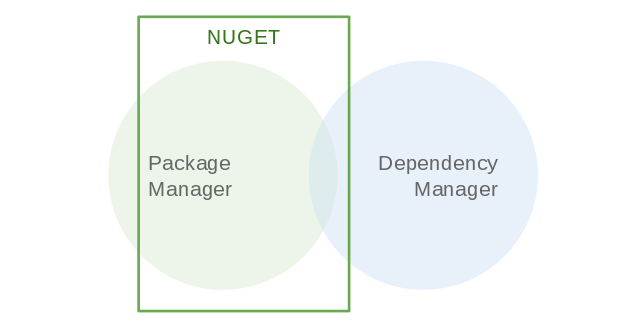
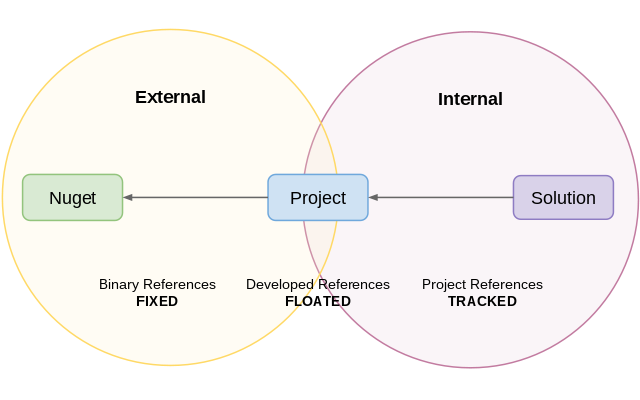
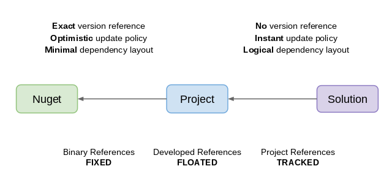
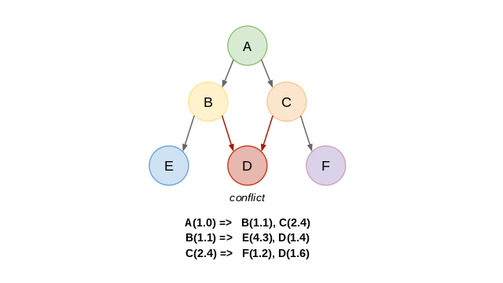
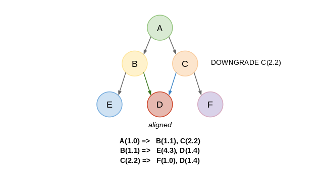
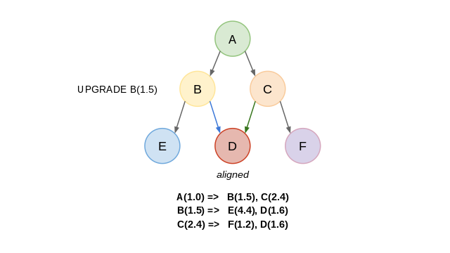
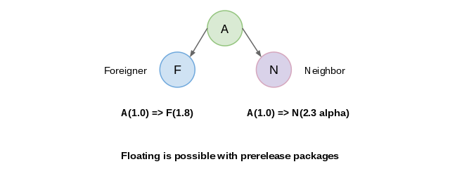
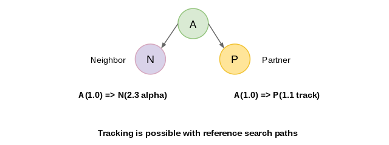

Diesmal soll es um ein technisches Thema aus der .NET-Welt gehen. Ich möchte in diesem kurzen Artikel meine Eindrücke zu Nuget, dem "Package Manager for .NET", schildern.
Zunächst einmal gilt festzuhalten, dass Nuget sehr hilfreich für das gesamte .NET-Ökosystem ist. Es ist eine Anlaufstelle für Libraries, Tools und Produkte rund um die .NET-Software-Entwicklung. Manche gehen sogar so weit und nutzen es als Software-Packaging-System. Doch um diese Spielereien soll es hier nicht gehen. Als .NET-Entwickler möchte ich die Kernfunktionalität von Nuget in den Vordergrund stellen.
Funktionsbereich
Der Anwendungsbereich von Nuget ist leider wesentlich breiter als der Funktionsbereich. Auf Grund der gar schauderhaften Integration von Nuget in Visual Studio und der irreführenden Kommunikation des Nuget/Microsoft-Teams zu der Funktionalität, wird Nuget gern als "die Allzweckwaffe für Libraries" betrachtet.
Obgleich auf der Website Nuget "nur" als Package Manager angepriesen wird, erhebt es durch die Integration in Visual Studio auch einen Anspruch auf Abhängigkeitsverwaltung. Schlimmer noch, durch den auf keinste Weise nachvollziehbaren Hype um die Package Restore-Funktion wird es auch noch als Heilsbringer in der Bauphase einer Software angewendet.

Die Wahrheit ist allerdings eine ganz andere. Der Funktionsbereich von Nuget lässt sich quasi vollständig auf grundlegende Paketverwaltung reduzieren. Das einzige, was Nuget noch im Ansatz mit Abhängigkeitsverwaltung zu tun hat, ist im Endeffekt die inhärente Versionierung.
Verzerrungen
Durch den invasiven Eingriff der Visual-Studio-Clients von Nuget in die Projektstrukturen und Anwendungskonfigurationen der Software erhebt sich Nuget allerdings aus dem auch schon zweifelhaften Pakethelfer-Status heraus zu einem Werkzeug, welches sich anmaßt, die Abhängigkeiten zu eben diesen Paketen auch noch verwalten zu können.
Dies mag vielleicht für kleine Spielprojekte gerade noch amüsant sein, doch spätestens bei semi-professioneller Software-Entwicklung ist diese Zweifaltigkeit von Nuget nicht nur erkennbar, sondern auch noch in höchstem Maße gefährlich.
Natürlich ist in einer Paketverwaltung auch das erkennen und auflösen von Abhängigkeiten eine wichtige Funktion. Ganz so einfach ist es im Alltag des Software-Entwicklers großer Anwendungen jedoch nicht, Abhängigkeiten zu eigenen und anderen Softwarebestandteilen zu verwalten.
Die offensichtliche Konzeptarmut von Nuget offenbart sich schon bei den einfachsten alltäglichen Überlegungen. Es ist kaum unüblich, dass in größeren Projekten eigene Bibliotheken für bestimmte Grundfunktionen oder spezielle Anwendungsteile geschrieben werden. Sei es nun eine gemeinsame Geschäftskomponente oder aber der Treiber für ein besonderes Endgerät. Mit diesem Hintergrundwissen lässt sich für die Beziehung von Paketen die folgende Grafik ohne langes Überlegen schlußfolgern:

Alleine diese einfachsten Überlegungen zeigen schon, wie Nuget sich elegant vor konzeptioneller Tragfähigkeit drückt. Während klarerweise alle externen Pakete per Binärreferenz via Nuget eingeholt werden, gibt es am anderen Ende die Projektreferenzen, um interne Bibliotheken zu verwenden. Die Schnittstelle zwischen diesen zwei Bereichen ist - natürlich - das .NET Projekt. Genau an dieser Stelle findet die substanzielle Software-Entwicklung statt. Hier werden auch tagtäglich Struktur-Entscheidungen getroffen: ob man Codeblöcke ausgliedern möchte, andere Bibliotheken verwenden möchte, oder aber neue Anforderungen mit externen Helfern implementieren möchte.
Nuget aber schert sich mit Verlaub einen Dreck um eben geschilderten Umstand. Es tut gerade so, als gäbe es Projekte nur, um irgendwie Referenzen zu verknüpfen. Eine Simplifizierung, die selbst Hobby-Informatiker schwerlich als vertretbar hinnehmen könnten.

Erkennbar ist dieses Defizit nicht nur an der in Nuget fehlenden Terminologie für o.g. "Schnittstelle" namens Projekt, sondern ganz besonders in den äußerst mageren Versionsverwaltungsfunktionen von Nuget. Wohin man auch nur schaut, weit und breit gibt es keine Möglichkeit, ein Paket als in Entwicklung zu markieren. Wohlgemerkt: in Entwicklung - das hat mit Pre-Releases (wie im Weiteren geschildert) nur annähernd etwas zu tun.
Es ist schon eine Farce, dass Nuget dem Entwickler zumutet, eine gerade in Entwicklung befindliche Bibliothek zunächst in das Repository zu pushen (egal ob lokal oder anderswo), um es in anderen Anwendungsteilen oder Subsystemen weiter zu verwenden. Doch zu allem Überdruß schafft es Nuget nicht einmal, ein Paket in einem transienten Status zu verwalten. Eigentlich irre, wenn man mal genauer darüber nachdenkt.
Nun bin ich ja nicht der erste und einzige, dem dieses unfassbare Defizit auffällt. Die aufgeweckten Entwickler des Fubu-Projektes haben das in ihrer Entwicklung auch schnell erkannt. Ihr Lösungsweg war es, Nuget einen Aufsatz namens Ripple zu verpassen, um so die gravierendsten Probleme wie Transienz und Projektdatei-Konflikte in den Griff zu bekommen. Auf den ersten Blick erscheint einem dieser Ansatz durchaus plausibel. Ein näherer Blick zeigt jedoch auch bei der Umsetzung von Ripple massive Schwierigkeiten. Für mich haben es die Jungs zwar gut gemeint, aber leider schlecht gemacht.
Inkonsistenzen
Dass Nuget sich mit dem hinzufügen von Referenzen und teilweise drastischen verändern von Projekten sich in das Abhängigkeitsmanagement einmischt, ist nicht von der Hand zu weisen. Das Problem dabei ist meines Erachtens, dass es sich eben einmischt, ohne wirklich zu wissen, worum es da wirklich geht. Eine Abhängigkeit hinzufügen kann jeder; die Abhängigkeiten sinnvoll nach Softwaregröße und Produktstrategie verwalten - das ist schon ein anderes Kaliber.
Wie leichtfertig und geradezu infantil Nuget an das Abhängigkeitsmanagement herantritt ist einem grundlegenden Anwendungsfall für Abhängigkeitsverwaltung abzulesen: den transitiven Abhängigkeiten und deren Interferenz zueinander. Ein einfaches Beispiel aus dem Alltag mittelgroßer Projekte: Wir haben eine Komponente A, die B und C als Abhängigkeiten birgt. Während B von D und E abhängt, ist C von D und F abhängig. Ein klassischer potenzieller Konflikt zu D entsteht.

Anstatt nun dem Entwickler diese Konfliktsituation vor Augen zu halten, ermächtigt sich Nuget eines naiven Herangehens: einfach die höchste angewendete Version zu nehmen. An dieser Stelle sollte bitte nicht gelacht werden, denn es ist wirklich so.
Als "Strategie" lässt sich dieses Verhalten nur mit Wohlwollen bezeichnen. Denn einfach Versionen installieren und schlichtweg Binding Redirects einsetzen, um nur eine halbwegs korrekte Version der Abhängigkeit zu verwenden ist nicht gerade vertrauenseinflößend. Das ist ungefähr so, als ob man an der Kasse am Supermarkt nicht mehr den genauen Betrag bezahlen kann, sondern nur noch in "ungefähren" Beträgen wie 1, 5, 10, 50, 100, 200 und 500 Euro.
Bevor man sich auf solch eine Art von Ungenauigkeit einlässt, sollte man doch wenigstens es versuchen, etwas besser hinzukriegen. Und offen gesagt ist das nicht nur "nicht zuviel verlangt", sondern auch noch ziemlich einfach.

Wenn nun transitive Abhängigkeiten von mehreren direkten Abhängigkeiten im Konflikt zueinander stehen, so lohnt es sich doch zumindest, sich die direkten Abhängigkeiten näher anzuschauen. Obgleich es nicht garantierbar ist, dass andere Versionen der direkten Abhängigkeit eine treffende transitive Version aufweisen, kann es durchaus der Fall sein. Aus meiner Erfahrung kommt es öfter vor als man Anfangs vermuten mag.

Natürlich kann es sein, dass weder ein Downgrade der einen, noch ein Upgrade der anderen Abhängigkeit zu einem sog. Dependency Alignment führt. Nichtsdestotrotz kann man durch solch eine bewußte Mitigationsstrategie den Versionsunterschied zumindest minimieren. Um im Bild der o.g. Supermarktkasse zu bleiben könnte man sagen: es ist besser, 3,- Euro für ein eigentlich 2,50 Euro teures Brot zu bezahlen, statt sich einfach mit 5,- Euro abspeisen zu lassen.
Entwicklungsfluss
Es gibt noch eine Reihe weiterer Grundelemente einer vertrauensvollen, praktischen Abhängigkeitsverwaltung, die Nuget vermissen lässt: sichere Upgrades, sichere Downgrades, Paketgruppen, Depencency Scopes (Gültigkeitsräume) und vieles mehr.
Doch an dieser Stelle sollen sogar diese Grundfunktionen vernachlässigt werden. Denn leider gibt es ein noch viel fundamentaleres Problem, welches es zu beachten gilt. Wie Eingangs schon erwähnt ist Nuget mit seiner Anwendungsumgebung nicht sehr vertraut. Es konzentriert sich geschickt auf den Download von Paketen, ohne zu beachten, wieso und wohin es diese Downloads denn durchführt.
Wichtig in diesem Zusammenhang ist, dass in größeren Projekten durchaus die Paketverwaltung für das eigene System angewendet werden möchte. Zumindest sprächen eine Reihe von Argumenten dafür: starke Systemgrenzen, unabhängige Entwicklungszyklen, strukturietes Portfolio, experimentelle Builds und mehr.
Der Anwendungsfall Nuget für seine hausinternen Assemblies zu verwenden liegt also nah. Weiterhin ist das .NET Ökosystem dafür bekannt, viele große Projekte im Geschäftsumfeld zu beherbergen und zu fördern. In Summe lässt sich sagen: man könnte mit ein wenig gutem Willen schnell zum Schluß kommen, dass Nuget als Paketverwaltung auch für eigene Pakete verwendet werden kann.
Die Köpfe hinter Nuget scheinen das anders zu sehen. Schließlich geht die Architektur von Nuget wie Eingangs erwähnt in keinster Weise auf diesen Anwendungskontext ein. Während der Entwicklung von Komponenten und Systemen werden Schnittstellen definiert, aufgebrochen oder temporär außer Kraft gesetzt. Experimente werden durchgeführt, neue Modelle eingeführt und Komponenten neu strukturiert. Eine Paketverwaltung für Entwickler sollte das zumindest in Betracht ziehen.

Zum Glück für den solch mitivierten Nuget-Anwender gibt es die sog. Prerelease Packages. Ursprünglich gedacht für Beta-Versionen und Tests, kann man sie - mit ein wenig Konvention versehen - auch für die Auszeichnung instabiler Abhängigkeiten verwenden. Damit kommt man an die innere Feedback-Schleife der Entwicklung wie bei den Projekt-Referenzen noch lange nicht heran, kann aber zumindest schon den Entwicklungsaustausch zwischen Entwicklern bzw. Teams halbwegs operabel abbilden.

Wenn es eben genau um diesen schnellen Entwicklungs-Feedback geht, dann wird es mit Nuget ganz, ganz schwer - fast schon unmöglich. Ein unsäglicher Umstand, dem man sich nur noch mit Hacks behelfen kann. Ein solcher Hack ist es, die Binär-Referenzen der Pakete in den Projekten durch das Erweitern des Assembly-Suchpfades aufzulösen.
In der Praxis ermöglicht einem ein solcher "Workaround" zumindest eine lokale Entwicklung der betroffenen Anwendungsteile bzw. Pakete, ohne die Binär-/Paketreferenzen aufschlüsseln zu müssen. Das ist zwar immer noch weit weg von einer adequaten Lösung, hilft aber mit diesem unfassbaren Konzeptfehler umzugehen.
Alternativlosigkeit
Nuget ist heutzutage aus der .NET-Software-Entwicklung kaum wegzudenken. Zweifellos hat es der gesamten Entwicklergemeinde viele Vorteile beschert über die man sich freuen darf. Für mich persönlich ist besonders die Öffnung des Ökosystems in Richtung Open Source nennenswert.
Um so beschämender ist es allerdings, dass Nuget durch das Diktat von Microsoft quasi alternativlos ist. Interessante Mitstreiter wie OpenWrap oder das hauseigene CoApp wurden niedergeredet und mißachtet. Die Grundidee des Paketverwalters wurde durch opportune Marketing-Features wie der grauenhaften VisualStudio-Integration per Powershell oder des klickfreundlichen Package Managers gnadenlos unterwandert.
Das Ergebnis: ein Paketmanager, der sich konzeptlos in die Abhängigkeitsverwaltung einmischt. Ein Paketmanager, der Versionsverwaltung nur rudimentär mit Journalfunktionalität, Konfliktmitigation und Kompatibilitätsgraphen auseinandersetzt. Ein Paketmanager, der Paketverwendung beschleunigt, aber Paketentwicklung bremst.
Unterm Strich darf sich der engagierte Entwickler damit begnügen, Nuget mit Bedacht und Vorsicht anzuwenden. Wenn möglich nur von der Kommandozeile, um unüberlegte Eingriffe der "Logik" der weiteren Nuget-Helfer zu vermeiden. Doch auch mit dieser eingeschränkten Anwendung bleibt Nuget verbesserungsbedürftig. Teilweise in Nuancen, teilweise grundlegend. Die Verbesserungsversuche der Community mit Ripple und NugetPlus sind lobenswert, allerdings konzeptionell mindestens genau so fragwürdig wie Nuget selbst.
Es bleibt der .NET-Entwicklergemeinde nichts anderes übrig, als demütig und treudoof Nuget zu akzeptieren wie es ist. Natürlich ist - verglichen mit den Jahren zuvor - Nuget ein großer Fortschritt. Die Frage ist nur, ob man sich nun damit begnügen möchte. Es ist eine verzwickte Situation mit der Paketverwaltung bei .NET-Projekten.
Besser gesagt: es ist eine verzerrte Situation mit der Nuget Paketverzerrung.